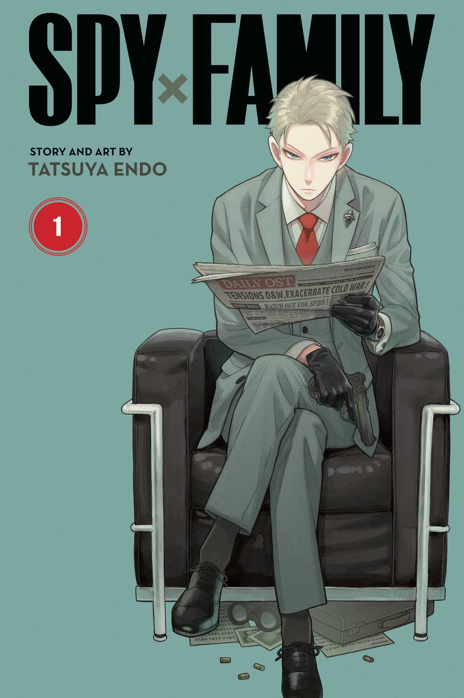
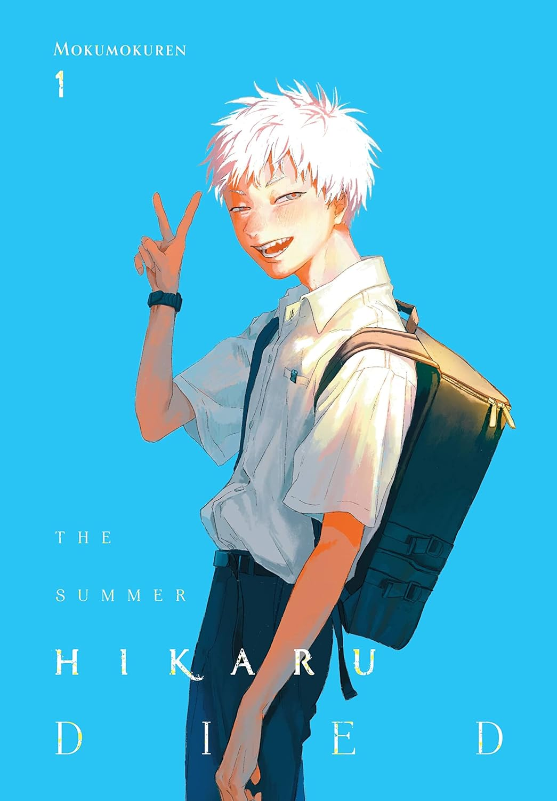
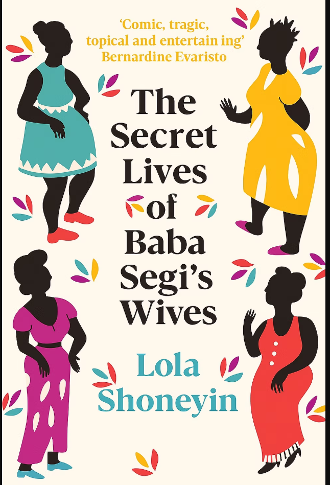

Master spy Twilight is unparalleled when it comes to going undercover on dangerous missions for the better of the world. But when he receives the ultmate assignment - to get married and have a kid - he may finally be in over his head! ...
Not one to depend on others, Twilight has his work cut out for him procuring both a wife and a child for his mission to infiltrate an elite private school. What he doesn't know is that the wife he's chosen is an assassin and the child he's adopted is a telepath.
Author: Tatsuya Endo
Genre: Comedy, Action, Slice of Life
Title: Spy x Family

Yoshiki tried to pretend nothing was wrong, but the truth cannot be ignored. Hikaru is gone. "Hikaru" is here. This new version is dangerous... or perhaps not? ...
One thing's for sure - Yoshiki doesn't seem to be in harm's way. In fact, "Hikaru" seems to want nothing more than to befriend and protect him. Despites Rie's warnings, Yoshiki chooses to extend the hand of friendship, hoping it will help "Hikaru" become more human. But in doing so, what might Yoshiki become...?
Author: Mokumokuren
Genre: Horror, Slice of Life
Title: The Summer Hikaru Died
'Nearly All The Men in Lagos Are Mad' is a collection of twelve short stories featuring characters with unique voices and stories that represent the diverse class, gender and ethnic melting pot that is Lagos. ...
There's a story of a young lady who tries to find her oyibo soulmate on the streets of Lagos; another of a pastor's wife who defends her husband from an allegation of adultery; a night of lust between a rising musician and his Instagram baddie takes an unexpected turn.
Author: Damilare Kuku
Genre: Literary Fiction
Title: Nearly All The Men in Lagos Are Mad

To the dismay of her ambitious mother, Bolanle marries into a polygamous family, where she is the fourth wife of a rich, rotund patriarch, Baba Segi. She is a graduate and therefore considered a great prize in Nigeria, but even graduates must produce children and her husband's persistent bellyache is a sign that things are not as they should be. ...
She only wants to escape to a quiet life, but the others disapprove of the newest, youngest, cleverest addition to the family. She is viewed with suspicion by her seniors - who fear she may unlock their well-guarded secret.
Author: Lola Shoneyin
Genre: Fiction, Contemporary, Literary Fiction
Title: The Secret Lives of Baba Segi's Wives